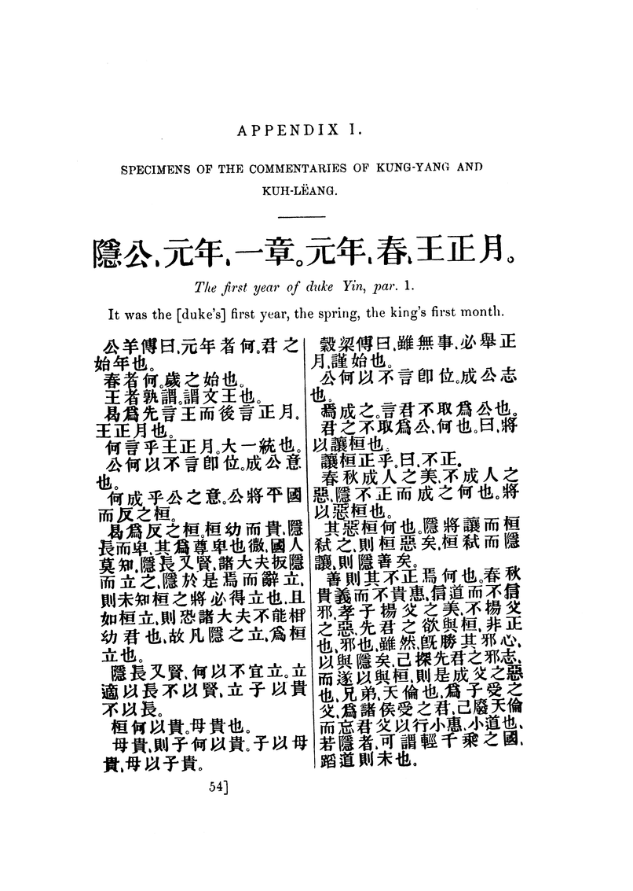

<div3 type="appendix" n="I">
<pb n="54"/>
<head>APPENDIX I. <lb/>
SPECIMENS OF THE COMMENTARIES OF KUNG-YANG AND <lb/>
KUH-LËANG.</head>
<div4 type="section">
<gap desc="Chinese characters" reason="editorial"/>
<head><hi rend="italic">The first year of duke Yin, par</hi>. 1.</head>
<p>It was the [duke's] first year, the spring, the king's first month.</p>
<cols n="2"/>
<cb n="1"/>
<gap desc="Chinese characters" reason="editorial"/>
<cb n="2"/>
<gap desc="Chinese characters" reason="editorial"/>